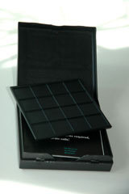

History
Similar to the L Game, Three Spot is called by its creator Edward de Bono the "Social Justice Game." De Bono created L Game with the intention of creating a simple game that still required great skill.
Game Play
The Pieces:
There are 3 pieces. Each piece is a rectangle that covers 2 of the squares on the board. One piece is white and is the neutral piece.
The other two pieces are different colors and split by the players.
Rules:
To move: During a player's turn, move the colored piece that belongs to you.
The piece must stay on the board and must cover at least one new square.
Afterwards, the same player must move the neutral piece to a new position as well.
To win: Score 12 points when your opponent has scored at least 6. If player A scores 12 points but player B has not yet reached 6, then B is the winner.
Set up the board so that 3 pieces cover the three spots on the board.
Strategies:
Interesting strategies can arise in this game because of the nature of the win condition. At certain points you may want to score as many points as you can, but at others you may want to force the opponent to score points while you seek to avoid scoring.
Variants:
Misere: Force your opponent to score 12 points when you have at least 6. Also score 12 points while keeping your opponent under 6 points.
Alternate names:
Social Justice Game
Pictures:

|

|
 |

|
GamesCrafters:
Kevin Ha and Alex Perelman
References:
Edward De Bono. "The 3 Spot Game." Edward De Bono's Web. < http://www.edwdebono.com/debono/3spot.htm >.